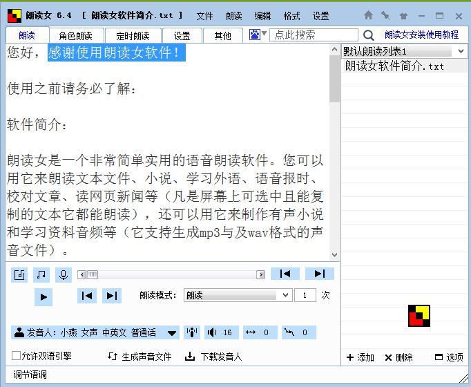
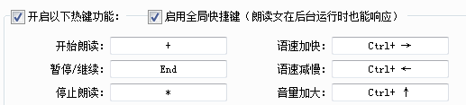
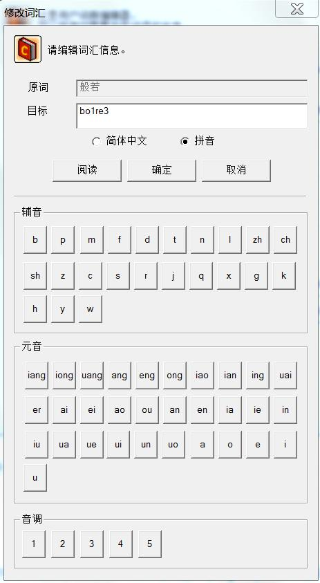
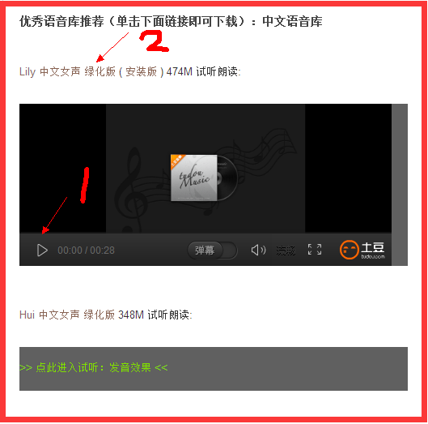
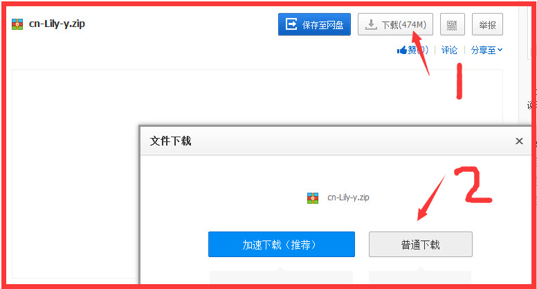
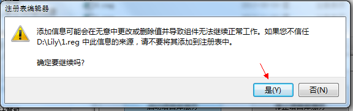
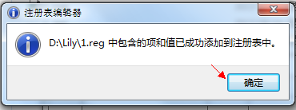
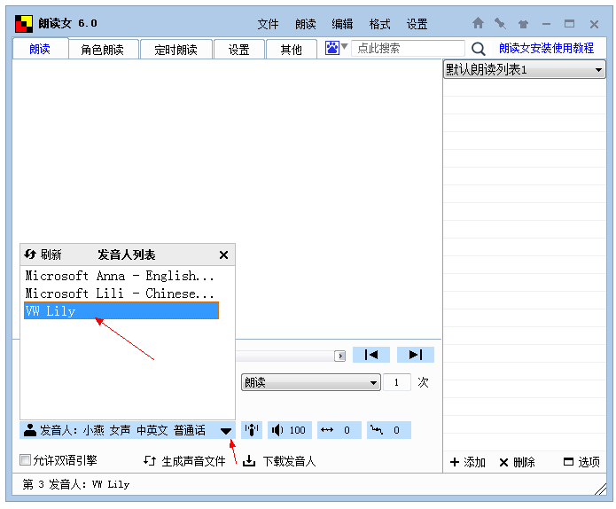

|
“如说修行”网上佛学院 语音朗读工具智钰
娑婆世界的众生，耳根最利。边听边看往往比单纯地阅读，更容易理解和记忆。因此，可以使用语音朗读工具来朗读教材，边听边看。而且，还可以通过反复聆听来熏修。 语音朗读工具，是帮助我们学习的工具。同其它工具一样，使用的次数愈多，就愈熟练，效果也就愈显著，而且愈能用在点子上。如果你对软件的安装调试不太熟悉，可请熟悉的朋友帮忙，你只管使用。 语音朗读软件颇多，例如，“朗读女”就是一款简单好用而免费的语音朗读软件。现将“朗读女”的使用方法介绍如下： 一、下载安装“朗读女”可以用“360软件管家”下载、安装“朗读女”；也可以进入“360软件宝库”（其网址是http://baoku.360.cn/），然后搜索“朗读女”，即可下载、安装。 下载后，进行解压、安装。运行时，“朗读女”的界面如下图所示：

二、下载安装语音库在“朗读女”界面的底部，有一“下载发音人”的图标，点击后，就会进入下载网页，选择你所要下载的语音库，例如：“Liang 中文男声”和“Hui 中文女声”。这两个语音库不仅读音效果好，而且都有“自定义发音”功能。 下载后，进行解压、安装。 现以“Liang 中文男声”为例来说明如何解压、安装： 1. 将下载的cn-Liang-y.zip文件解压到你所选择的文件夹。（注意：此文件夹及其上面文件夹的名称，必须都是英语，否则将无法正常工作！） 2. 进入解压后的Liang文件夹，找到“启动与停止语音库服务程序.exe ”，双击此文件，然后点击“启动语音库服务”。 3. 重新打开你的朗读软件，在“发音人”栏，选择VW Liang，就可以用这个语音库朗读文字了。 注：语音库的下载与安装的具体方法，详见附录：《语音库的下载与安装》。 三、制作朗读脚本打开“朗读女”，在菜单上点击“文件”，再点击“新建”，编辑器上出现空白文本。 然后，右击要朗读的网页，点击“全选”，右击“朗读女”编辑器，点击“粘贴”，这样就将教材内容拷贝在“朗读女”上。 在菜单上点击“格式”，再点击“首行缩进”，使每段开头缩进两格。 你还可以在“格式”的菜单上，进行“简体转繁体”或者“繁体转简体”，以及设置字体大小、颜色，等等。 最后，在“朗读女”菜单上点击“文件”，再点击“保存”，填入此文件的名字，点击“保存”，即完成朗读脚本的制作。 “朗读女”每次打开时，都能从上次停止的位置，继续向下朗读。 四、调试（一）选择发音人在“发音人”栏，选择你所喜欢的发音人。在“发音人”栏的右侧，是“网络发音人”图标，可以选择网络发音人。 （二）调整音量、语速根据自己的需要，调整音量、语速。 （三）热键设置为了使用上的方便，在朗读过程中启用“暂停/继续”功能，例如，将“End”键设置成“暂停/继续” 具体方法如下： 点击第二排的“设置”，然后点击“热键设置”，在“暂停/继续”栏中，按下的“End”键（如下图所示），设置便已生效。在朗读过程中，按下“End”键，即可暂停或者继续。 同样的方法，可以分别将小键盘的“+”键设置成“开始朗读”键，小键盘的“*”键设置成“停止朗读”键。 五、边听边看在边听边看的过程中，所看的文字，可根据各人的喜好，选择以下一种： （一）看网页上的文字你可以让“朗读女”朗读，而你看网页上的文字。 （二）看“朗读女”上的文字你也可以在“朗读女”朗读时，看“朗读女”编辑器上的文字。 （三）看桌面字幕如果你喜欢像看光碟一样，让所读的内容逐句显示，则在“朗读女”菜单上点击“朗读”，再点击“打开/关闭桌面字幕”即可。（如果你以后要关闭桌面字幕，如法炮制一遍即可。） 当鼠标指向桌面字幕时，将出现设置字幕的工具条，你可以由此设置字幕的颜色、字体、采用卡拉ok模式还是非卡拉ok模式，以及关闭字幕。 六、网页朗读在网页上选取（高亮）所要朗读的章节或段落（或者鼠标右击，全选此文），然后鼠标右击，再点击“朗读女”图标（或者直接点击悬浮的“朗读女”图标），即开始朗读。朗读完后，如果需要再读，可以再点击“朗读女”图标（或者直接点击悬浮的“朗读女”图标），便可重新再次朗读。
问：怎样移除“朗读女”悬浮图标？ 答：点击第二排的“设置”，然后点击“基本设置”，点击“显示悬浮朗读图标”之前有勾的小方框，来取消选择。 七、自定义语音如果需要的话，你可以自定义语音（目前只有Neospeech系列语音库才有此功能）。下面就以Lily语音库为例 （“Liang 中文男声”和“Hui 中文女声”的自定义语音方法与此相同），说明如何将“++”读作“加加”（每一步请参照下面附图的相应编号部分；用同样的自定义语音方法，可以将“般若”一词读作“波若”）： 1. 进入语音库目录这个目录下：“Lily\M16-SAPI5\lib”。 2. 双击“UserDicChi.exe”，以运行此词典编辑程序。（“UserDicChi_c.chm”是自带的说明文件，如果要查阅“自定义语音”的使用说明，请双击“UserDicChi_c.chm”。） 3. 点击“打开文件”。 4. 点击“增加词汇”。 5. 选择注音方式：若选取“简体中文”，则用中文来标注读音（如本例所示）；若是选取“拼音”，即用拼音符号来标注读音（如下例所示）。 6. 在“原词”栏，用键盘输入：++。在“目标”栏，用键盘输入：加加。 7. 点击“阅读”，来试听读音。 8. 试听后没问题，就点击“确定”。 9. 然后点击“保存”，以保存刚才编辑的内容。 10. 保存好后，点击“结束”，以退出词典编辑器。 完成以上操作后，退出“朗读女”软件，再重新启动“朗读女”软件，设置就生效了。
若是选取“拼音”，则是用拼音符号来标注读音（如下图所示）。下面以“般若”一词读作“ｂō ｒě”为例来说明。
 １）汉语拼音 汉语的音节由元音（韵母）、辅音（声母）、声调组合而成。拼音可由上述音素的组合来表示。声调由四种音调符号标在元音上部来表示。在用户词典编辑其中，声调用数字来表示并标注在元音之后。 ２）输入方法 ①元音（韵母） 可在下列元音中点击输入： iang，iong，uang，ang，eng，ong，iao，ian，ing，uai，er，ai，ei，ao，ou，an，en，ia，ie，in，iu，ua，ue，ui，un，uo，ve，a，o，e，i，u，v. ※其中，v表示?，ve表示?e。 ②辅音（声母） 可在下列辅音中点击输入。 b，p，m，f，d，t，n，l，zh，ch，sh，z，c，s，r，j，q，x，g，k，h，y，w ③声调 《汉语拼音方案》中，有阴平（ˉ）、阳平（ˊ）、上声（ˇ）、去声（ˋ）和轻声（不标调）这五种声调。在此编辑器中，分别用1，2，3，4，5，这五个数字来表示： 1 表示阴平（ˉ）； 2 表示阳平（ˊ）； 3 表示上声（ˇ）； 4 表示去声（ˋ）； 5 表示轻声。 例如“ｂō ｒě”，是以“bo1re3”来表示。“目标”栏中的bo1re3，可用键盘直接输入，也可以点击元音表、辅音表中的音标和声调表中的数字来输入。
附录：语音库的下载与安装一、下载语音库一、在“朗读女”界面中的下部（见下图），点击 “下载发音人” 进入下载页。或者，直接访问下载页（其网址是：http://www.443w.com/tts/?post=2）。
二、进入语音库下载页后， 1、先试听一下语音人的发音效果； 2、如果喜欢，就点击下载链接而下载（如下图所示）。
 三、进入相关网盘地址后，点击下载即可（如下图所示）：
 二、安装语音库下载好语音库（发音人）后，按照文件包中的使用说明，安装语音库即可 （如下图所示）。 一、解压文件 右击所下载的压缩文件（例如“cn-Lily-y.zip”），选择解压到哪一个文件夹。（注意：此文件夹及其上面文件夹的名称，必须都是英语，否则将无法正常工作！） 二、启动语音库 进入刚才解压缩的语音库文件夹，双击“启动与停止语音服务程序.exe” （如下图所示）。
注意：有部分杀毒软件可能会将“启动与停止语音服务程序”误报成病毒，如果被杀毒软件当病毒杀掉的话，请找回文件，选择“信任”后，再运行即可。
当上图所示的对话框出现时，单击：“启动语音服务”。之 后，会出现以下如下图所示的对话框，选择：“是” 。

然后又会出现以下对话框，选择：“确定”， 即完成语音库的安装。
 三、选用语音库（发音人）安装好语音库后，重启“朗读女”，单击“发音人”，弹出“发音人”列表之后，点击刚才安装的那个发音人（如下图所示），就可以用它来朗读文本了。

|